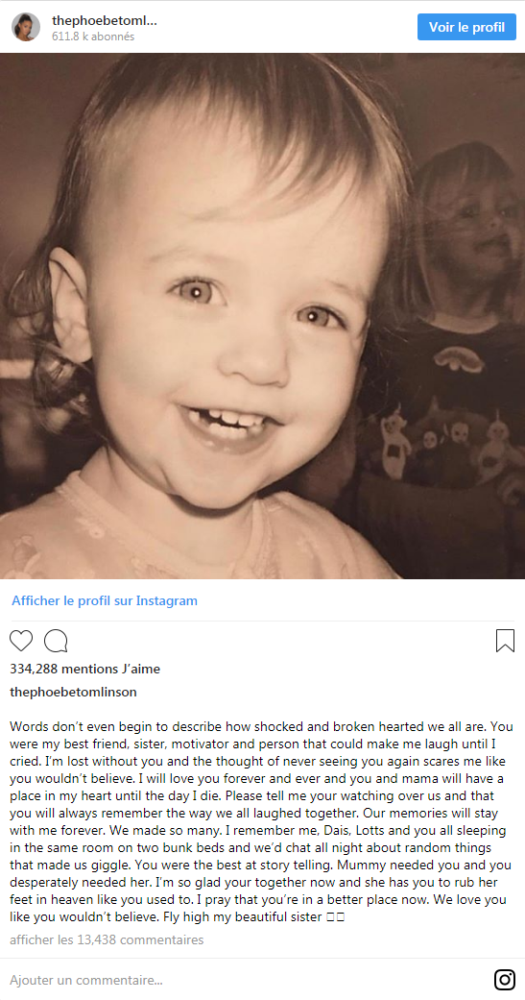
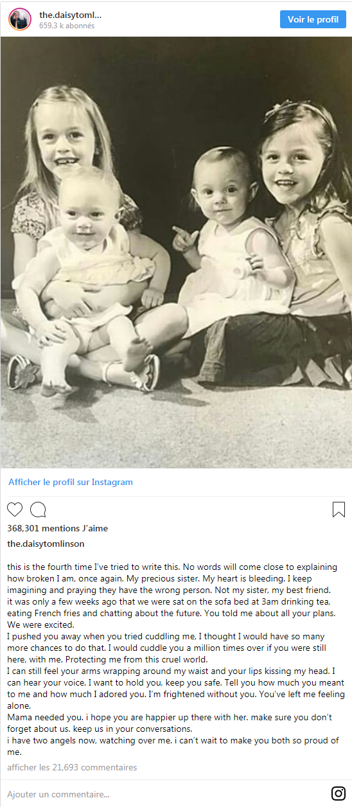
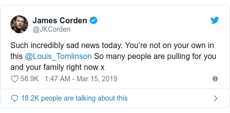

"You were my best friend, sister, motivator and person that could make me laugh until I cried."
That was the message from Phoebe Tomlinson, whose older sister Felicite was found dead last week at the age of 18
Felicite, the sister of One Direction singer Louis Tomlinson, was an aspiring fashion designer who had 1.3 million followers on Instagram.
Felicite and Louis lost their mum Johannah to leukaemia in 2016.
Daisy and Phoebe Tomlinson, who are 14 and twins, paid tribute to their sister on Instagram.
"Mummy needed you and you desperately needed her," Phoebe wrote. Both sisters talked about their mum in their tribute posts. Daisy said: "Mama needed you. I hope you are happier up there with her. "I have two angels now, watching over me."
Scotland Yard said police were called by London Ambulance Service at 12:52 on Wednesday 13 March to a residential address following reports of a woman having a cardiac arrest.
"A female believed to be aged 18 was pronounced dead at the scene," the statement said.
It added: "A post-mortem examination will take place in due course."
A person who was with Felicite called 999, according to The Sun newspaper.
Louis released a song earlier this month which was inspired by the grief he felt over his mum's death. It includes the lyrics: "I'll be living one life for the two of us."
"It was something I needed to get off my chest," the 27-year-old told Radio 1 Newsbeat at the time.
"I used to lean on my mum for a lot of things - anytime I needed advice on something she would be the first call I made."
The Doncaster native said playing the song to his sisters for the first time was "tough" because he "didn't want them to get caught up in the sadness".
But, he said, "as their big brother if I can sing those words it'll hopefully help them too".